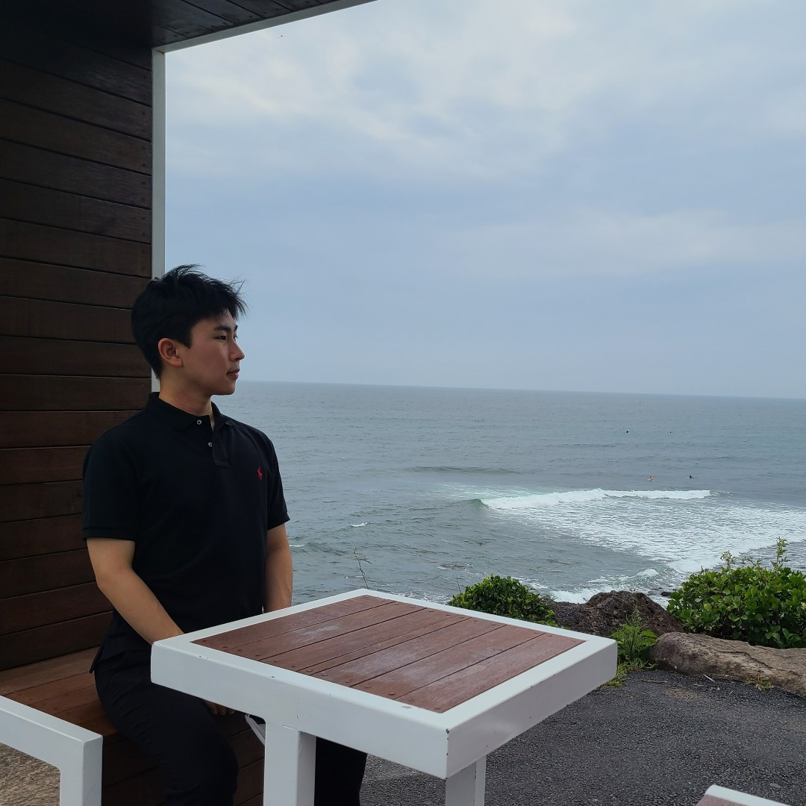

박종원
Park, Jong Won
안녕하세요. 박종원입니다.
서울대학교에서 지역시스템공학과 벤처경영학을 전공하고 있습니다.
저는 창업을 통해 경제적 자유를 얻고 싶습니다.
스타트업 관련 경험
- 2019.03 ~ 2019.11 : SNUSV.net 24기 활동
- 2019.03 ~ 현재 : 서울대학교 벤처경영학 전공 11기
관심 키워드
- 재테크 (자산배분, 백테스트, 거래소)
- 미니멀 (본질에 집중할 수 있는 환경 조성)
- 연결 (오프라인에서 온라인으로)
기타 정보
- MBTI: 청렴결백한 논리주의자 ISTJ-T
(16personalities, 나무위키)